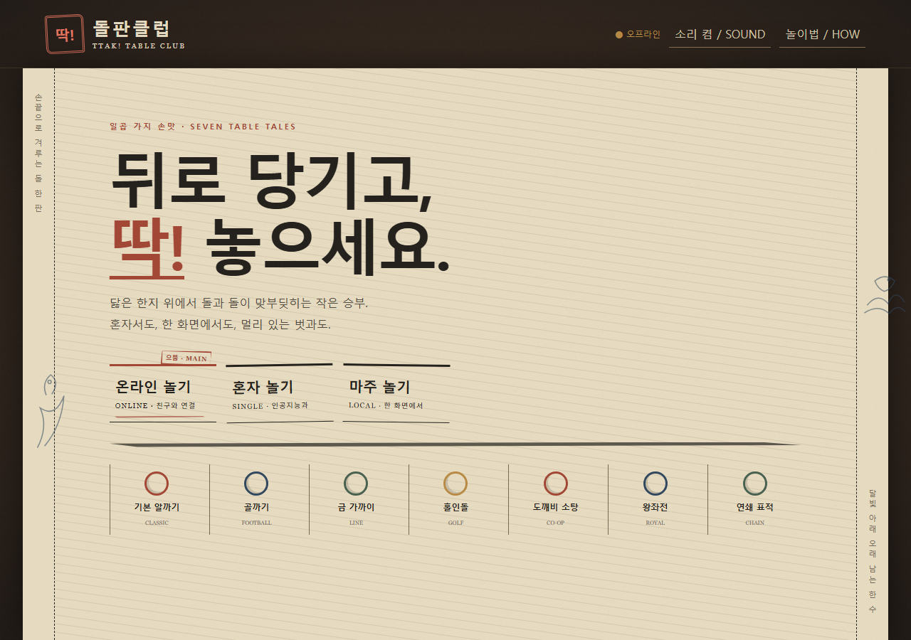
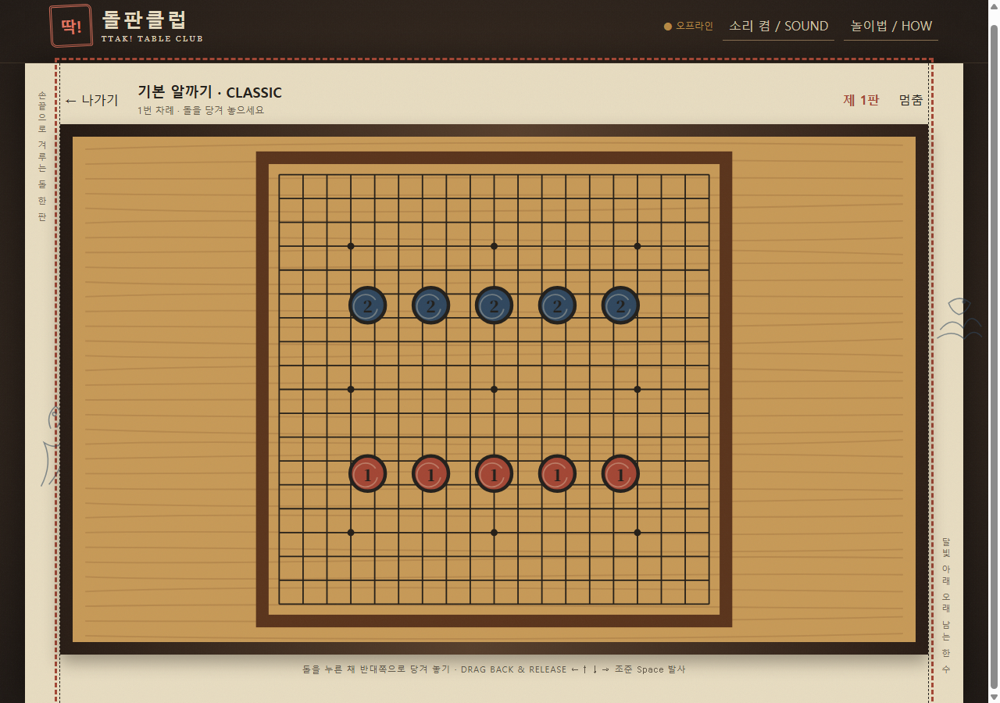

서버가 판정하는 승부
Socket.IO 권위 서버가 입력과 게임 상태를 판정합니다. 비공개 온라인 방에서도 클라이언트 화면이 아니라 같은 규칙이 결과를 결정합니다.
PUBLIC WEB ITCH BUILD v1.0.2
하나의 돌판 위에 일곱 가지 손맛을 담은 오리지널 브라우저 테이블톱 게임 컬렉션. 한지·먹·나무의 질감을 Canvas 2D로 그리고, 모든 플레이 형태가 같은 물리와 규칙을 공유합니다.

클래식 알까기, 축구, 라인, 골프, 고블린 협동, 로열, 체인의 7개 모드를 직접 설계했습니다. 차례와 충돌의 명료함은 유지하면서 모드마다 조준, 공간 장악, 협동, 연쇄 반응이라는 다른 판단을 요구합니다.
Socket.IO 권위 서버가 입력과 게임 상태를 판정합니다. 비공개 온라인 방에서도 클라이언트 화면이 아니라 같은 규칙이 결과를 결정합니다.
결정론적 물리·규칙·AI를 싱글, 로컬, 비공개 온라인 플레이가 공유해 모드와 접속 방식이 달라도 판정 기준을 유지합니다.
클래식 플리킹, 축구, 라인, 골프, 고블린 협동, 로열, 체인이 각기 다른 목표와 보드 흐름을 만듭니다.
Canvas 2D 위에 한지, 먹선, 나무의 질감을 쌓아 디지털 화면에서도 전통 놀이판의 온도와 마찰감을 전달합니다.

게임 기획과 아트 디렉션, 공유 물리·규칙·AI, Canvas 2D 렌더링, Socket.IO 권위 서버와 QA를 구현했습니다. v1.0.2 최신 전체 테스트 결과는 106/106 PASS입니다.
Release fixes: visible-board outs, post-collision bounds, deadlock-safe turn skip/terminal chain, and reconnect/server authority.
This static release supports single/local play; online rooms need the server build.